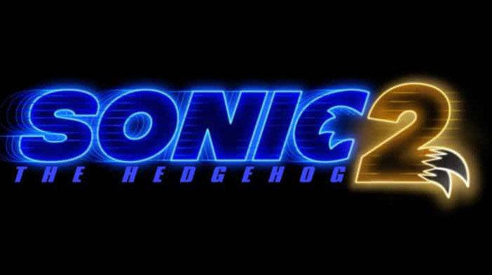

O Dr. Robotnik retorna à procura de uma esmeralda mística que tem o poder de destruir civilizações. Para detê-lo, Sonic se une a seu antigo parceiro, Tails, e parte em uma jornada para encontrar a joia antes que ela caia em mãos erradas.
❌